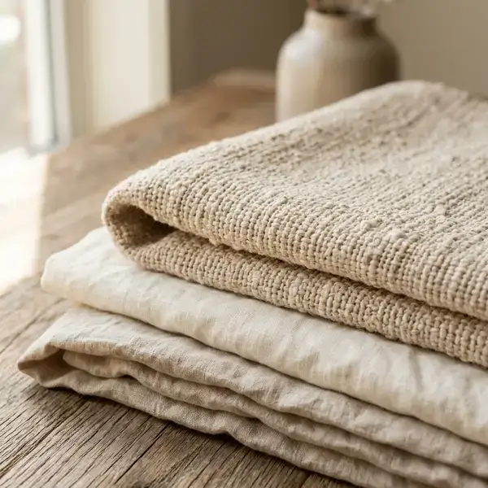

The Heart of the
Indian Home
For centuries, cotton has been the silent companion of the Indian household. At CHC Handlooms, we believe that true affordability isn't found in synthetic perfection, but in the breathable, honest texture of natural fibers. Our cotton is selected for its ability to regulate temperature, ensuring comfort through the humid Delhi summers and the cool winter nights.

Breathability &
Airflow
Unlike mass-produced polyester blends, hand-finished cotton allows for natural airflow. This breathability is what gives our bedsheets and curtains their distinctive "lightness." When you drape your windows with CHC cotton, you aren't just blocking light; you're allowing your home to breathe.
This tactile quality is why our fabrics feel cooler to the touch and softer against the skin with every wash.
Longevity &
Graceful Aging
One of the hidden virtues of premium cotton is how it matures. While synthetic fabrics degrade and lose their luster, hand-finished cotton softens and gains character over time. It is a material designed for longevity, intended to be a part of your home's story for years to come.